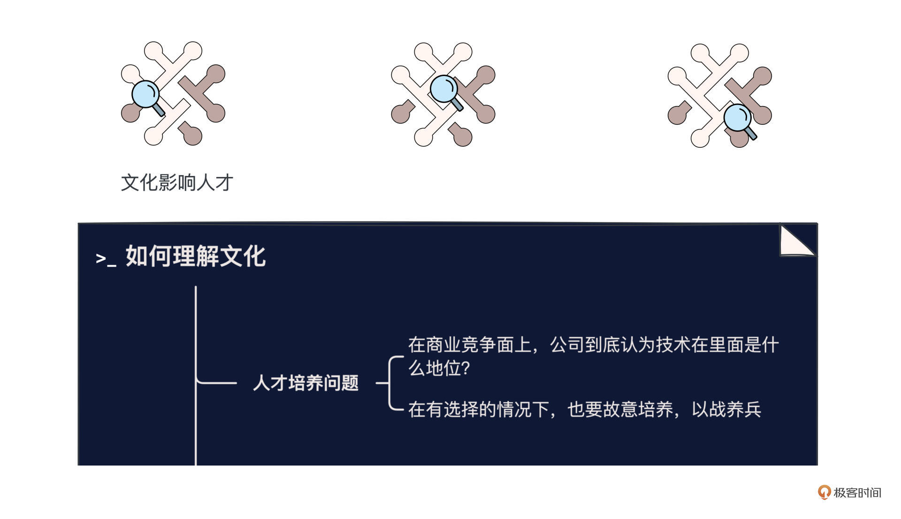
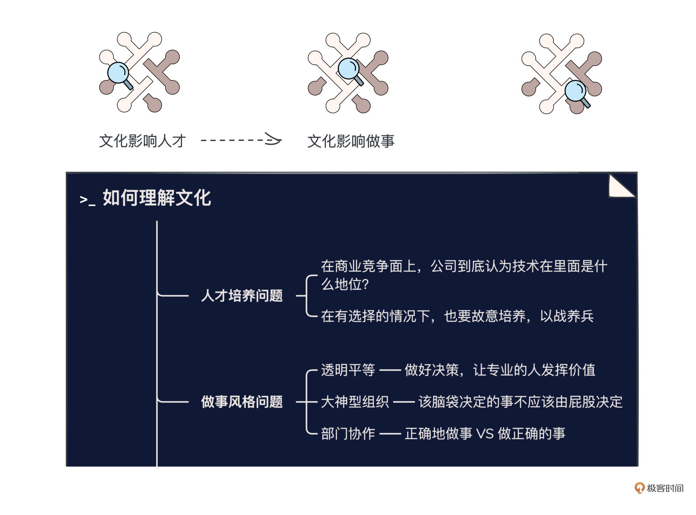
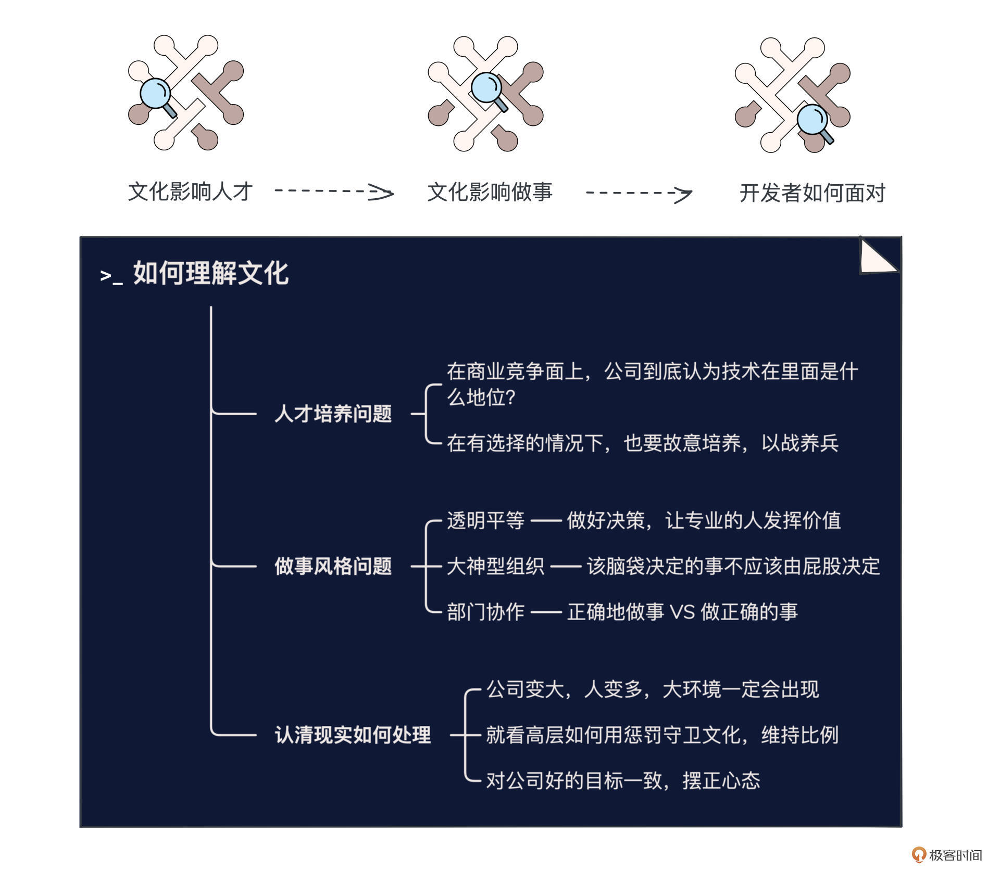

- 01 小厂项目：做程序员不难，难的是做职业程序员.md.html
- 02 小厂创业：做出一个产品，卖给所有人.md.html
- 03 淘宝HSF：能让淘宝出重大故障的就那批人.md.html
- 04 淘宝消防队：真正最优秀的程序员不应该是英雄.md.html
- 05 HBase_T4：Leader最重要的，说白了是要赌未来.md.html
- 06 异地多活：技术圈子的人，见过猪跑很重要.md.html
- 07 运维团队：我能干，只是我不想干而已.md.html
- 08 基础团队：研发效能部门，解决不了研发效能问题.md.html
- 09 统一调度：只是问题非常多而已，摔出来就行了.md.html
- 10 出走大厂：离职？还是不离职？这是一个问题.md.html
- 11 CEO心得：大厂出来创业，最大问题是对钱没概念.md.html
- 团队：在人身上，你到底愿意花多大精力？.md.html
- 开篇词 这一次，我们来采访毕玄.md.html
- 成事：技术人最大的问题就是情怀化.md.html
- 文化：你所在的团队，有多少人敢讲真话？.md.html
- 方向：技术演进，到底该怎么思考未来？.md.html
- 架构：架构师只是个角色，不是个岗位.md.html
- 番外：一位险些没上得了大学的青年，如何开启计算机征程.md.html
- 捐赠
文化：你所在的团队，有多少人敢讲真话？
你好，我是叶芊。- - 今天我们要讨论的话题是文化，说“文化”这个词你可能会觉得很虚，那我们换个词——“做事风格”，这就和你们团队平时的协作习惯密切相关了。- - 做事风格，往小了讲，会影响团队成员对开会的认知、各成员的工作氛围，往大了讲会影响各部门间的协作成本，甚至公司人才培养的模式，乃至公司最根本的价值观。- - 如果你所在的团队或者公司，也在这些方面有疑问，那让我们一起进入今天的专题对谈，看看毕玄这个热衷解问题的人，会给出什么解法？
- 极客时间：常听你讲蚂蚁的人才模式更好，为什么？
毕玄：核心是文化不一样，蚂蚁是规划文化，淘宝是赛马文化，这就决定了两家公司有非常大的风格差异。淘宝的人很难适应蚂蚁，可能勉强能适应，但也不大适应，蚂蚁的人就更难适应淘宝。
像淘宝的人喜欢折腾一些乱七八糟的事情，当然这几年更难，但以前会有人真的搞赛马，这就是淘宝的风格，跟腾讯类似，但腾讯不大一样的是它顶上那些是不大动的。
极客时间：文化背后是什么？像这种做事风格应该也不是公司一开始就定了大家要这样。
毕玄：我认为跟整个商业竞争有很大关系，就是在你的商业竞争面上，你到底认为技术在里面是什么地位？如果技术只是个支撑，那就一点都不重要了，如果技术就是你的竞争力，那你的看法就会变，会觉得技术人才的培养、存留都很重要。像蚂蚁更规划一些，也有是金融行业的原因。
极客时间：在蚂蚁，技术就是业务竞争力，所以像架构师就会培养？
毕玄：蚂蚁会刻意培养，他会有一个盘点，比如说你现在是负责这个系统的架构师，他如果觉得你有潜质负责整个业务板块，过一两年就会把你调岗，直接调去另外一个系统的团队里，这样你不就两个系统都熟了。
蚂蚁很多大架构师都是这样培养出来的，有目的地调整人员组织结构。淘宝是没有组织培养的，所以这个事情就乱套了，只能靠项目，但靠项目就很难，大家都是被临时弄上去的，就会硬做。
极客时间：直接从组织结构上调岗吗？
毕玄：否则你没有机会的，很多人就是在一个系统干到死，他根本没有机会了解另外一个系统是怎么回事，他去哪了解？所以我们觉得，架构师这玩意儿是个组织问题。
淘宝一致认为人才是靠野蛮生长出来的，你能成长就能成长起来，不能成长他觉得培养了你也成长不出来。
这两种文化我们内部也讨论过，淘宝最终能长出来的人，当然确实不错，因为他是从一个非常复杂的环境出来的。这在公司前期还可以，因为野蛮生长总会长出来几个，只是不够多，但公司变大之后，业务多元化，要横向扩张，你面临的问题就需要一个厚的人才梯队池来解决，如果你不特意培养就没有了，公司就会断岗。
阿里后来典型就是这个问题，我们想了一件什么事情，想找人派过去解决问题，就发现有点少。
极客时间：什么时候开始发现有人才问题的？
毕玄：后来选Leader都有这个问题，可能2017年就出现了，比如说要成立一个新的团队，想找一个什么样的人，我们一捞最后发现能选的就这几个人，而且他们进来这么多年，级别居然还没变，这就见鬼了。因为这些人很重要，但是又都没有得到晋升。
极客时间：对于人才问题，当时你们怎么办的？也没有再去招人或者后面培养起来几个吗？
毕玄：没有，这种我们没得选，说白了，我们还是会选信任的，都是这样。
比如说架构师，如果已经有这样的架构师了，公司绝对不会冒险，他会选择我最信任的一帮人，一直做，除非这帮人全走。这也是我们一直反思的，阿里的架构师体系是一个巨大问题。
走前我做的最后一个大项目就是阿里的集团上云，但我还是项目的总架构师，说实话我并不是很需要这个Title，而且我以前已经做过类似的大系统改造了，做这件事对我没有多大成长意义，所以何必呢，不如让一个有潜质的新人来承担这个位置。但是最后发现还是很难。
极客时间：很难是因为什么，可以具体聊下吗？
毕玄：因为一个大系统的架构，不是光有你，你下面还有很多系统的架构师，关键是这些人听不听你的。
之前我们聊架构师的判断都是主观的，这个问题在当前阶段，我讲的所有方法，另外一个架构师可能不这么认为，他觉得我们应该用另外一个更漂亮的方法，但我可能偏务实，这样双方很容易产生冲突。所以这个大架构师能不能控制一批架构师的想法，让他们听你的，在大公司是一个巨大的挑战。
一个新人上来，别人觉得你又没做过，不靠谱。像我是老人，我干过，你们都没干过有什么权利跟我说，我就能说：“我承认你说的挺好，但是你必须按我说的干。”
所以架构师的培养为什么很难，尤其大架构师，因为他是以战培养出来的。
极客时间：但战又很少？
毕玄：对。而且有战的时候，公司在有选择的情况下不会故意培养，其实就把他用废了，因为他自己觉得已经没有任何意义了，而且干的很苦。这一点是我们以前很反对的。
我们的想法是有选择的情况下，公司你也应该故意培养。有选择就是比如一个新人，一个老人，尽量用新人，不能说你觉得他以前干过，就继续让他干，关键他也不一定想干。
像阿里双十一的大队长，这活都多少年了，还让他继续干，你说对他有什么成长意义，其实没有，对他来讲也不是个荣誉，他觉得没有任何意思。但公司觉得这个项目很重要，你干过而且成功了，所以继续让你干，是靠谱的。但这样新人一点机会都不会有，永远不会有机会。
极客时间：那你们当时怎么办的，有没有什么解法？
毕玄：我们当时就提议，公司其实不用纠结，你任命谁架构师，下面的人一定会听他的，因为我已经任命了这个人，下面就算叫的再凶，被任命的人也可以非常强势，实在不行就说我是大队长，你们就得听我的。
极客时间：这样公司承担的风险更大，能给批吗？
毕玄：换新人无非就是有点风险的，但是也能干，老人的好处无非是你可以相对控制风险，然后做好整件事情。
但这也有方法的，你可以把老人放在后面。我以前就跟他们说，我不做这个总架构师，但我可以在背后支持，前面一定要推出一个新人，我可以坐在那张桌子上在背后支持他，只要是他说的，我都说都是对的。这个人只要这一战不会出太大的问题，其实他就起来了，成为了第二个。
双十一大队长阿里不也换了好几轮，后面一直换，也没出什么大事。因为又不是真的你一个人能决定的，除非你在这个圈子里已经有极强的信任感了，你做的决定就是决定，但多数新人上去做的决定，很多时候根本不是决定，下面要经过N轮讨论的，所以你完全不用害怕。
极客时间：但集团上云还是用的你，说明这个方案还是没过。那阿里后来架构师培养这个问题怎么办的？
毕玄：阿里去年也想像蚂蚁一样搞，但关键问题是没法调，你觉得这个人有潜质成为大架构师，想让他今年做这个业务，明年做那个，下面的人会告诉你不行，这个人不能被调走。
极客时间：业务架构师的调换为什么很难？有业务风险？
毕玄：其实可以调，纯粹就是因为Leader，好不容易有个人能帮我顶住事，你把这个人给我调走了，那不就我自己顶了？但蚂蚁因为从上到下都贯穿了这个思想，他们是没有问题的。
极客时间：到现在也没有一点改变？
毕玄：在尝试，不过感觉很难，所以我说这是文化，一家公司的文化和基因是很难改变的。

极客时间：你现在新公司的文化，看你朋友圈讲希望成为一家“透明平等”、“大神型工作氛围”的公司，你是怎么想要定这几个？
毕玄：这是我离开阿里最强的几点感受，就变成了我们公司的核心价值观，因为我觉得这就是关键。
极客时间：先说透明平等，你定这条是想要什么？
毕玄：这是奠定一家公司能不能做好决策，能不能让专业的人发挥价值。
阿里以前坐一张桌子上开会的时候，没有人关注你是什么级别的高管，这跟我一毛钱关系没有，我只表达我的观点，因为我相信至少在我的领域，我比你更专业，所以我应该表达我想说的。至于你最后怎么做决定，只要你讲清楚为什么就可以，毕竟你是负责那个人，又不是我。
如果谁一进去就跟别人说要这么干，我们肯定会问一句为什么？如果他不讲清楚，我们是绝对不会跟着干的，这就是以前。
这个环境就非常良好，因为高层做决定要考虑非常多因素，你应该把你自己在专业角度上的看法全部告诉他，不是说他就要听你的，他会自己再综合判断，但他会讲他的理由和逻辑，你可以不认他的决定，但你至少认他为什么这么做决定。
以前因为有这种氛围，我们都说阿里真的是一家非常牛的公司，因为做到这点非常难。
极客时间：这种文化是怎么形成的？很难是因为常常老板自己先过不了这关？
毕玄：很多老板会觉得我简直被你们挑战到极致。因为我以前给管理者培训，很多外企的人都问阿里为什么下属能挑战主管？我们说不就是这样的吗，大家本来是平等的，而且你下属在那个领域一定比你专业，他如果不比你专业，不很诡异吗？
极客时间：但有些Leader可能会觉得我的经验比下属丰富，所以自己比下属更专业呢？
毕玄：那就没法弄。但如果一个公司非常透明平等，其实，高层做决策的准确性会高很多，因为你听到了来自各方真实的声音，但如果环境不透明平等，这个桌子就会变。
阿里后来有些人离开和这个是有些关系的。很多事情，你会觉得还是不要说好了，老板说什么就是什么，因为作为专业的人，你会觉得反正说了也从来没什么用，那干嘛说？有什么意义？这样，老板会越来越觉得我太明智、太聪明了，说什么都是对的，人都这样，肯定希望听到的是好话，我说一句你们每个人挑战我十句，很不爽的。但事实证明那样才是好的。
你看阿里近两年不断讲，要保持自己是一家透明、平等的公司。但不断讲的时候，或多或少说明肯定已经在这个地方出现了问题，但光讲是很难改变的。
以前的管理层，在宣布一个决定的时候，压力很大，很多人会挑战你很多问题，你得去思考怎么回答，总不能说我就这么决定，这样老板自己也会觉得很丢人，所以就会准备得非常充分来做宣讲。现在就没有太多人挑战，很好，你讲的都对。
极客时间：准备不充分然后被人挑战的，你经历过吗？如果想塑造这种文化你觉得核心要解决的问题是什么？
毕玄：这很正常，我就告诉他我确实没想到这点。
这本质其实是心态问题，你能接受，就没有什么，被挑战了那又怎么样？很多人可能觉得作为Leader一定要什么都懂，或者是觉得损失了权威什么的。其实没有必要。
透明、平等阿里这两年做的肯定没有以前好了，不过内网还是保持了一个比较好的环境，阿里的内网应该是各家做得最好的。什么都敢讲，而且我们当年比现在还敢讲，新人看不到太多很挑衅的发帖，老人很挑衅的。
极客时间：大家都是实名，能有多挑衅？
毕玄：以前马云任命博士（王坚）做集团CTO，马云发一个贴，下面一群人回帖反对，你想相当于是集团最大的头，说我要任命一个人，然后你们下面的人都跳出来说我不同意。这简直了，这就是以前的阿里，现在哪有多少人敢？
极客时间：一个公司的价值观变化，比如说阿里，你觉得是因为什么？
毕玄：很大的原因是加入这家公司的人的多元化。以前淘宝老人多，大家都这风格，我根本不在乎你是谁。但我们后来分析可能跟“安全感”有很大关系。
老人为什么敢？是因为老人觉得自己很安全，因为我是对事，又不是对你这个人怎么样，所以就算我对你这样了，我相信我不可能因为这个被干掉，或者你敢对我有什么绩效上的不公平等等，我们相信绝对不会发生。
但新人不敢，他可能以前在各种各样的公司，这么干一定会被人穿小鞋，那他就会先观察一下。再加上后来加入阿里的很多人，可能目的跟我们当年不一样，当年我也说不上，但我们肯定不是说来就是为了混两年拿股票，但新人有些是这样的，来镀金，股票能拿两年最好，拿到我就可以走了，但如果能再混一年多拿点，那更好。他当然不想挑战老板了，能让我混过去就可以了。
极客时间：所以当公司到一定规模，价值观或者做事的文化很容易滑坡。
毕玄：对，我也觉得，因为规模到后面，吸纳的人太多了，很难去严格挑，不现实。
尽管阿里说我们要找同路人，但问题是你要的人太多了，能招进来都行，管他同不同路。像阿里后来自己也改了，说能同走一段的也行。
现在大公司都这样，头条据说会稍微好一点，但我觉得是他们还没上市，阿里上市后有比较明显的分水岭，因为上市后股票能兑现，就意味着有钱了，大家加入的目标会有些改变。所以头条现在的状态应该最好，所有人目标完全一致，就是冲刺上市，但上完了估计也会碰到各种新的问题。
极客时间：那这个问题怎么解？
毕玄：我觉得很难解决。这种大环境一定会出现，可能就看你的比例。
比如说作为团队Leader，在你的团队里，如果敢讲真话的人多，大家发现能挑战你而且好像也没被怎么样，那这个氛围就会被养成，大家也会被慢慢带过来。最怕敢讲真话的人变少，那就完蛋了，最后大家就一定都不讲了。
这是个整体文化，如果大家都这风格，就不会觉得这有什么问题。所以最大的老板最关键，因为最大的老板如果不大能被挑战，那你看着吧，所有人立刻就是一个风向。
因为阿里高层他们也不是不知道这些问题，但关键他们也觉得不好解。所有人都不知道该怎么解，这个问题涉及人，太复杂了。很多大公司到了一定规模，就跟人类的协作规模问题一样，你协作规模能突破多大。
我们也希望看到一家更大规模的科技类型公司，因为现在全球的大部分科技公司都是这个规模，没有谁突破，一旦突破我们估计都不怕了。所以如果一家公司能透明、平等，那大家真的应该珍惜。
极客时间：你公司的价值观除了“平等透明”，还有一个“大神型”工作氛围，这是想解决什么问题？
毕玄：这句话其实是逍遥子讲的，他希望阿里也变成这样，大神型组织，而不是大咖型。
大咖型是指因为你在这个位置，所以你说的都对。阿里有些团队这个现象特别突出，因为经常组织结构调整，那个人以前压根没干过这事，他调到那儿了，就变成了权威。像我以前不做音视频，后来成了视频云的Leader，我就成了音视频技术晋升委员会P8P9的评委，我说这合理吗，难道不应该找一个专业的人来吗？不能因为我是Leader所以我就专业了。这就是典型。
大神型是指因为他专业，所以应该听他的意见。当然还是一样，最后的决策是另外一回事，是个综合判断，但我们要尊重大神，他更知道你讲的那个天花板是真的还是假的。
极客时间：但很多公司可能就是那个位置上的人说了算。
毕玄：因为他在那个位置，就会有很强的信心，我调到这个位置，我就比你们都懂，就会觉得下面专业的人提的都不靠谱。
极客时间：或者我必须得表现的比你们都懂？
毕玄：也有可能，那就是他没有安全感，特别在乎自己的权威。这种对一家公司，尤其技术公司就非常要命。
极客时间：为了维护公司这样透明、平等、大神的文化，你有没有什么具体的措施？
毕玄：只能看平时做事了。像我现在的公司会强调如果有人让我们做不了透明、平等，不管你是谁，不管什么原因，都会开掉。
其实这取决于公司怎么捍卫你的价值观。为什么大家都觉得阿里以前是一家特别有价值观的公司，说白了就是下手够狠，只要出现就开掉，那所有人就懂了，有些东西真的是不能碰，碰了真的会死，不管是谁，不管是什么职位。
极客时间：公司大了之后，直接开掉也可以吗？
毕玄：也可以，只是很多人觉得好像缺了谁会发生什么。其实不会的。
但后来的人就不大敢，会有各种考虑，会不会对我的业务短期有影响等等各种各样的，所以有些事情发生，就会导致整体价值观的作用大幅下降。
极客时间：什么时候感觉价值观的作用下降了？一些奖罚？
毕玄：对，这种类似的，因为大家都会关注。一个公司想守卫文化要付出很大代价，因为更多是靠惩罚来体现的，光喊大家肯定是不信的，只有处罚，而且处罚一定要够狠。所以文化价值观其实是公司的底线，如果不是底线，就不要把它列进去。
极客时间：这种下狠手做处罚，是你之前说的“做正确的事”吗？
毕玄：那不一样。“正确地做事”和“做正确的事”大公司会比较严重。
比如说我是一个业务团队，为这个业务要做什么事情，但可能像财务、法务、安全团队等等会上来就告诉你，这个事有风险，最好不要干，这叫他们在“正确地做事”，因为站在他的角度他是对的。
但这不是“做正确的事”，为什么大公司开会都很痛苦？大家觉得根本不在一条船？很多团队纯粹站在自己的角度，而且说的还没有办法被反驳，所以我们做业务的都很恼火，你老要面对一堆不背业务责任的横向部门给你提的建议，但是他们说的确实我也承认都是对的，但这就很恶心了。
极客时间：我也不是搞你心态，我是真的在给你提我非常专业的建议。
毕玄：对，站在他专业的角度，他觉得你这样做对公司会造成风险，所以他是正确的。
但我作为业务方，承担了所有业务压力和责任，说实话，你们这些团队不是来上就告诉我不能干，是告诉我站在你的专业角度，你觉得怎样能干。比如说有法务风险，你要讲有什么方法避免或者怎么变成合规，但他怕这样说了他有风险。
但你上来就告诉我什么都不能干，那我怎么让业务做得更好，我做不了，要不你们来干业务？我要的是解法，这才叫做正确的事，大家是在一条船上的。
极客时间：这个问题怎么处理？
毕玄：处理不了。有些人的风格是做正确的事，只要这个事对公司有帮助就做，不在乎比如能获得什么利益，或者有什么风险，这都不重要，大家的目标是一致的。
但有些人的目标是，我能很好地在公司活下去就可以了，至于其他的我不关心。从人性上来讲，你是可以理解这些部门为什么要这样的，他是我不做错就行了。
极客时间：所有大公司都一定会出现的？还是说因为公司文化？
毕玄：我觉得大公司都会，但跟透明、平等一样，关键看怎么保持比例。

极客时间：除了做事的风格，我还有一点比较好奇，开会，你是怎么看的？
毕玄：开会是没有办法的，做Leader我从头到尾都在开会，根本不再干别的，这很正常，因为很多横向的团队协作都需要你，调动资源各方面的。
极客时间：有哪些你不参加吗？比如不同类型的会，信息同步的、问题讨论的、进度讨论的。
毕玄：我一般很少开纯粹进度跟进这种没太大意义的会，太浪费大家时间了，你的进展我有很多办法知道的，不管在系统上，还是一个简单的周报，其实你写几句就可以了，我就知道大概情况了。
极客时间：那有例会吗？
毕玄：我们一般双周会开周会，通常一个多小时，更多是用来跟大家分享一些感受，或者同步大家不知道的公司上层的一些信息，如果有问题，大家就碰一下，如果没有问题就不要说，就结束了。
我们开会最重要的基调，就是为了解决问题，还有同步信息。所以周会很多人很轻松，你不用汇报进度，当然有可能我会直接问你，一种是我觉得很有问题的，一种是想借机夸一下的。
极客时间：那你们会有讨论方向或者规划的这种会吗？
毕玄：但说实话我觉得很多都没有意义，因为不存在说什么几十个人讨论一个问题，这就不用讨论了，因为不会有任何结果的。
我们可能刚开始的规划会有讨论，但规划这个东西在开会之前，主导的人就是Leader他自己，肯定是有想法的，只是想让大家充分发表一下而已，所以这种我们叫同步会，就是我来告诉你我的决定和理由是什么，你们知道就行了，因为还是需要团队都知道今年核心的目标是什么、为什么要这么做，这种其实要花一些时间。
极客时间：所以是开之前基本已经有一个决定了，不会什么都没有然后所有人去讨论问题？
毕玄：如果不解决问题，这种会就不要开，同步信息有很多方法，群里发一下就好了，干嘛要在这里。
以前逍遥子很搞笑的，因为给他汇报多数不是同步信息，肯定是希望他帮忙解决个什么问题，所以老逍说看其他人的PPT，他都是翻到最后两页，因为最后两页才是关键，前面全都是废话。
所以Leader是干嘛的？Leader是帮你解决问题的，其实他是你的资源，有些人向上管理做得很好，能把Leader用得很惨，这种人非常牛，是好下属。我以前的下属都很擅长这个，因为像进度和执行都是他们应该把握好的，我除了能解决问题还能干啥，我也干不了啥了。
极客时间：你主要会提供哪些资源？
毕玄：很多都是偏横向的团队协调，另外有些可能是他自己很难判断到底要往哪走，比如一个决定他要怎么做，这种你告诉他你自己会怎么做就好，剩下他可以自己做。
大家对你的诉求肯定就是帮我解决问题，如果你解决不了，你就说解决不了，其实没什么的，很多Leader不愿意说，觉得我一定得帮助他解决，但很多确实不是你能解决的，因为大公司有些问题就是很难解决，很尴尬。

水友讨论区
到这里关于“做事风格”的主题讨论就结束了，小话题比较多，所以聊的也稍微散一点，我们简单总结一下。
- 人才培养：本质是从商业竞争面上看专业人才是什么地位？支撑VS竞争力
- 工作氛围：公司能不能做好决策的基石？平等透明VS老板都对
- 地位态度：专业的人才能不能发挥价值？大神型VS大咖型
- 团队协作：各团队一起能不能做成事关键看比例？正确地做事VS做正确的事
- 开会风格：开会是不可避免的但开会的基调是什么？讨论/同步VS解决问题
至于解决方案，很可惜，涉及人的很多问题可能就是没有解法，关键看公司的想法，从公司对一些问题的具体做法里分析一下站在哪一方。
毕玄后来也在朋友圈说：“规则对每个人的影响差别可能很大，所以要统一很难，只能是宏观层面的ROI选择，创业了的第一感受如果不计代价，很多决定并不难做，但事实不是这样。”
不知道你对今天对谈的哪个部分比较有感触，欢迎在留言区留言参与讨论。
不过别灰心，下一讲我们会聊一聊“架构师”这个很多程序员向往的职业，而且会有可实操的方法论哦，下一讲见。
拓展阅读
当时毕玄总结自己的2021年写了一次复盘，和公司文化相关：2021最大的几点感受
© 2019 - 2023 Liangliang Lee. Powered by gin and hexo-theme-book.